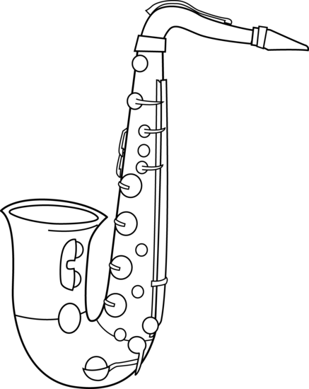

Saxophones were first designed in 1840 by Adolphe Sax, a Belgian instrument maker. They were made with the bass clarinet in mind, but tweaking the acoustics and choosing easier fingering patterns. All saxophones are tuned to B♭ or E♭, depending on which model, but the first prototypes were tuned to F and C.

Hover for more info
- There are at least thirteen different types of saxophone. Of these thirteen, only 3 do not follow the B♭/E♭ key.
- E♭ Saxophone's Concert Pitch B♭ is Printed Pitch G. B♭ Saxophone's Concert Pitch B♭ is Printed Pitch C.
- Due to the instrument utilizing a reed, Saxophones are woodwind instruments, although their appearance resembles brass instruments.